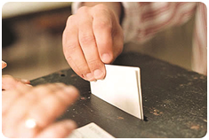

Eleições intercalares na Boidobra em Julho
Na sequência da renúncia de toda a oposição, vai ser marcado novo acto eleitoral no final da primeira quinzena de Julho
As eleições intercalares para a Assembleia de Freguesia da Boidobra estão previstas para o final da primeira quinzena de Julho, informou na passada sexta-feira, 9, o presidente da Câmara Municipal da Covilhã, Vítor Pereira, depois de ter conversado com o secretário de Estado da Administração local.
Até lá, a junta será gerida por uma comissão administrativa, nomeada pelo Governo, composta por dois elementos da CDU e um do PS, de acordo com os resultados das eleições de 29 de Setembro.
Vítor Pereira lamenta que se tenha chegado a este ponto e que as “questões de natureza pessoal se sobrepusessem”. Já a oposição, acusa o presidente do município de não ter feito o suficiente para evitar este desfecho. “Não se esforçou minimamente para que tal não viesse a acontecer”, considera José Pinto, do PCP. O anterior presidente da Boidobra lamenta que Vítor Pereira não tenha sequer ouvido o actual presidente da Junta de Freguesia, João Simão, e acusa os eleitos do PS, Movimento Acreditar e Boidobra Para Todos, que renunciaram ao mandato, de terem planeado um “assalto ao poder”. “Prestaram um péssimo serviço ao poder autárquico”, realça.
Joaquim Matias, do PSD, partido que apoiou a lista Boidobra Para Todos, também acusa o presidente da Câmara municipal de falta de empenho. “Infelizmente não houve o empenho da Câmara Municipal como houve em Aldeia do Souto, no Tortosendo e no Dominguizo”, vinca o vereador social-democrata.
Pedro Farromba, do MAC, chegou a sugerir a realização de nova votação para a eleição dos vogais da junta, já que foi esse momento que provocou as divergências existentes. Mas as posições “extremadas” não o permitiram. O vereador independente diz-se “triste com esta situação”. No entanto, salienta tratar-se da democracia a funcionar. “É um resultado que não é desejado por ninguém, mas surge na sequência do processo democrático”, acentua.
A junta de Freguesia da Boidobra encontra-se em gestão corrente desde Janeiro, já que o orçamento para este ano está por aprovar. Nas eleições Autárquicas de Setembro a CDU obteve a maioria, com quatro eleitos. O PS elegeu três representantes e as duas listas independentes um cada. No processo de instalação dos órgãos, a oposição denunciou irregularidades, que a CDU nega, e o caso foi entregue ao Ministério Público.
A 6 de Abril os cinco eleitos da oposição na Assembleia de Freguesia da Boidobra, do PS, Movimento Acreditar e Boidobra Para Todos anunciaram a intenção de renunciaram ao mandato, tal como os restantes membros das listas, cerca de 50 pessoas, o que obriga a novas eleições, e admitem a possibilidade de se apresentarem a votos numa lista conjunta.
João Simão considera o gesto da oposição um “acto de cobardia e malvadez”, para provocar “uma situação que sempre almejaram”. E entende que o fizeram agora, antes de o tribunal se pronunciar sobre a queixa feita por supostas irregularidades na votação para a instalação dos órgãos, porque entende que a Justiça lhe vai dar razão.
publicado em: quarta-feira, 15 de Maio de 2014